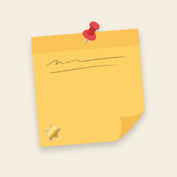

붙임 · Stickit
홈 화면에 포스트잇처럼 붙이는 메모 · Sticky notes on your home screen
지원
앱을 쓰다 궁금한 점이나 문제가 있으면 메일로 알려 주세요.
mycrewdeveloper@gmail.com
- 홈 화면 위젯 붙이기: 홈 화면 빈 곳을 길게 누르고 → 위젯 → ‘붙임 메모’를 끌어다 놓으세요. 앱의 설정 옆 위젯 버튼에서도 붙일 수 있어요.
- 위젯 크기: 붙인 위젯을 길게 누르면 크기를 바꿀 수 있어요.
- 메모 저장: 메모는 기기에만 저장돼요. 앱을 지우면 메모도 지워져요.
Support
Questions or problems? Email us at mycrewdeveloper@gmail.com
- Add a widget: long-press an empty spot on your home screen → Widgets → drag “Stickit note”. You can also add one from the widget button in the app.
- Resize: long-press a widget to change its size.
- Your notes are stored only on your device. Uninstalling the App deletes them.